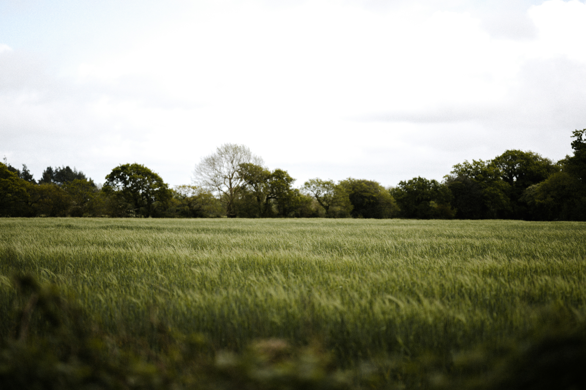

portal geografico sul-americano
PGS — INFORMAÇÃO E TERRITÓRIO
PGS — INFORMAÇÃO E TERRITÓRIO
Conheça o Portal Geográfico Sul-Americano — uma plataforma jornalística dedicada a mostrar como a geografia, a inovação e o agronegócio estão transformando o futuro da América do Sul.
O PGS nasceu com a missão de aproximar as pessoas das grandes mudanças que moldam o território sul-americano, levando informação de forma acessível, moderna e confiável. Mais do que noticiar acontecimentos, buscamos revelar como o desenvolvimento sustentável, a tecnologia e a força do campo estão criando um novo cenário para o continente.
Acreditamos que compreender o território é compreender o futuro. Por isso, acompanhamos de perto os avanços do agronegócio, as transformações ambientais, a evolução tecnológica no campo e os projetos que unem produção, sustentabilidade e inovação.
Nossa equipe é formada por jornalistas, geógrafos e pesquisadores apaixonados pela América do Sul e comprometidos em mostrar um agro mais forte, inteligente e sustentável. Produzimos conteúdos exclusivos sobre o futuro do setor agrícola, destacando iniciativas que impulsionam a economia sem deixar de lado a preservação ambiental e a qualidade de vida.
No PGS, informação e visão de futuro caminham juntas para mostrar como o agro sul-americano está evoluindo e ajudando a construir um amanhã mais sustentável para todos.

Por estar presente em diferentes regiões da América do Sul, o PGS oferece uma visão ampla e integrada das transformações que moldam o continente e o futuro do agronegócio. Acreditamos que a informação geográfica, aliada à inovação e à sustentabilidade, é uma ferramenta essencial para o desenvolvimento consciente e para a construção de uma sociedade mais preparada para os desafios do amanhã.
Desde a nossa fundação, trabalhamos para mostrar como o agro moderno vem evoluindo com tecnologia, responsabilidade ambiental e novas soluções sustentáveis. Mais do que informar, buscamos destacar iniciativas que fortalecem a produção, preservam o meio ambiente e impulsionam o crescimento do continente de forma equilibrada.
É isso que move o PGS: transformar conhecimento em visão de futuro, conectando geografia, inovação e desenvolvimento sustentável para compreender e acompanhar a evolução da América do Sul.
Contribuir para que a sociedade tenha acesso a informações geográficas e jornalísticas de qualidade sobre a América do Sul, promovendo conhecimento, inovação e consciência sobre as transformações que moldam o continente. O PGS busca destacar o avanço do agronegócio sustentável, da tecnologia no campo e das iniciativas que unem desenvolvimento econômico e preservação ambiental.
Acreditamos que a informação tem o poder de transformar realidades. Por meio de um jornalismo responsável, moderno e acessível, trabalhamos para aproximar as pessoas das mudanças que estão construindo o futuro da América do Sul. Valorizamos a sustentabilidade, a inovação, a responsabilidade social e o compromisso com a verdade, mostrando como o agronegócio pode evoluir de forma inteligente e equilibrada com o meio ambiente.
Ser reconhecido como um dos principais portais de informação geográfica e jornalística da América do Sul, referência na cobertura das transformações do agronegócio, da sustentabilidade e da inovação territorial. Queremos inspirar pessoas, conectar conhecimento e mostrar como a evolução do campo e da tecnologia pode contribuir para um futuro mais sustentável, moderno e consciente para toda a sociedade.